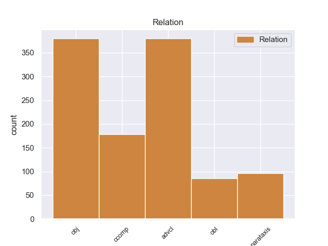
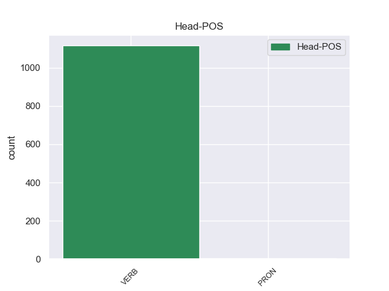
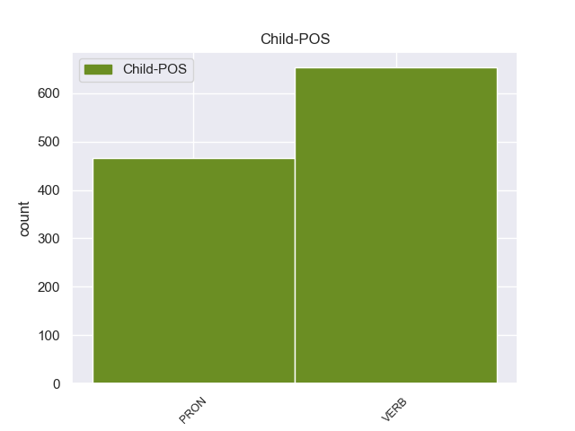

Distribution of features within this leaf



Agreement Rules sorted by frequency.
- When the dependent token is the adverbial clause modifier(advcl) of the head token,
1 Quando _ _ _ _ 0 _ _ _
2 c’ _ _ _ _ 0 _ _ _
3 è essere VERB V Mood=Ind|Number=Sing|Person=3|Tense=Pres|VerbForm=Fin 8 advcl 8:advcl _
4 il _ _ _ _ 0 _ _ _
5 terremoto _ _ _ _ 0 _ _ _
6 la _ _ _ _ 0 _ _ _
7 terra _ _ _ _ 0 _ _ _
8 trema tremare VERB V Mood=Ind|Number=Sing|Person=3|Tense=Pres|VerbForm=Fin 0 _ _ _
9 e _ _ _ _ 0 _ _ _
10 si _ _ _ _ 0 _ _ _
11 muove _ _ _ _ 0 _ _ _
12 . _ _ _ _ 0 _ _ _
1 Così _ _ _ _ 0 _ _ _
2 i _ _ _ _ 0 _ _ _
3 piloti _ _ _ _ 0 _ _ _
4 perdono _ _ _ _ 0 _ _ _
5 secondi _ _ _ _ 0 _ _ _
6 importanti _ _ _ _ 0 _ _ _
7 e _ _ _ _ 0 _ _ _
8 le _ _ _ _ 0 _ _ _
9 altre _ _ _ _ 0 _ _ _
10 macchine _ _ _ _ 0 _ _ _
11 li li PRON PC Clitic=Yes|Gender=Masc|Number=Plur|Person=3|PronType=Prs 12 obj 12:obj _
12 superano superare VERB V Mood=Ind|Number=Plur|Person=3|Tense=Pres|VerbForm=Fin 0 _ _ _
13 . _ _ _ _ 0 _ _ _
1 Quando _ _ _ _ 0 _ _ _
2 tutti _ _ _ _ 0 _ _ _
3 i _ _ _ _ 0 _ _ _
4 cittadini _ _ _ _ 0 _ _ _
5 di _ _ _ _ 0 _ _ _
6 uno _ _ _ _ 0 _ _ _
7 Stato _ _ _ _ 0 _ _ _
8 , _ _ _ _ 0 _ _ _
9 uomini _ _ _ _ 0 _ _ _
10 e _ _ _ _ 0 _ _ _
11 donne _ _ _ _ 0 _ _ _
12 , _ _ _ _ 0 _ _ _
13 hanno _ _ _ _ 0 _ _ _
14 il _ _ _ _ 0 _ _ _
15 diritto _ _ _ _ 0 _ _ _
16 di _ _ _ _ 0 _ _ _
17 votare _ _ _ _ 0 _ _ _
18 si _ _ _ _ 0 _ _ _
19 dice dire VERB V Mood=Ind|Number=Sing|Person=3|Tense=Pres|VerbForm=Fin 0 _ _ _
20 che _ _ _ _ 0 _ _ _
21 in _ _ _ _ 0 _ _ _
22 quello _ _ _ _ 0 _ _ _
23 Stato _ _ _ _ 0 _ _ _
24 c’ _ _ _ _ 0 _ _ _
25 è essere VERB V Mood=Ind|Number=Sing|Person=3|Tense=Pres|VerbForm=Fin 19 ccomp 19:ccomp _
26 il _ _ _ _ 0 _ _ _
27 suffragio _ _ _ _ 0 _ _ _
28 universale _ _ _ _ 0 _ _ _
29 . _ _ _ _ 0 _ _ _
1 Durante _ _ _ _ 0 _ _ _
2 la _ _ _ _ 0 _ _ _
3 staffetta _ _ _ _ 0 _ _ _
4 , _ _ _ _ 0 _ _ _
5 i _ _ _ _ 0 _ _ _
6 nuotatori _ _ _ _ 0 _ _ _
7 fanno fare VERB V Mood=Ind|Number=Plur|Person=3|Tense=Pres|VerbForm=Fin 0 _ _ _
8 una _ _ _ _ 0 _ _ _
9 squadra _ _ _ _ 0 _ _ _
10 di _ _ _ _ 0 _ _ _
11 4 _ _ _ _ 0 _ _ _
12 persone _ _ _ _ 0 _ _ _
13 : _ _ _ _ 0 _ _ _
14 ogni _ _ _ _ 0 _ _ _
15 nuotatore _ _ _ _ 0 _ _ _
16 nuota nuotare VERB V Mood=Ind|Number=Sing|Person=3|Tense=Pres|VerbForm=Fin 7 parataxis 7:parataxis _
17 solo _ _ _ _ 0 _ _ _
18 per _ _ _ _ 0 _ _ _
19 una _ _ _ _ 0 _ _ _
20 parte _ _ _ _ 0 _ _ _
21 di _ _ _ _ 0 _ _ _
22 il _ _ _ _ 0 _ _ _
23 percorso _ _ _ _ 0 _ _ _
24 di _ _ _ _ 0 _ _ _
25 gara _ _ _ _ 0 _ _ _
26 . _ _ _ _ 0 _ _ _
1 Quando _ _ _ _ 0 _ _ _
2 andiamo _ _ _ _ 0 _ _ _
3 in _ _ _ _ 0 _ _ _
4 i _ _ _ _ 0 _ _ _
5 boschi _ _ _ _ 0 _ _ _
6 a _ _ _ _ 0 _ _ _
7 cercare _ _ _ _ 0 _ _ _
8 i _ _ _ _ 0 _ _ _
9 funghi _ _ _ _ 0 _ _ _
10 , _ _ _ _ 0 _ _ _
11 portiamo portare VERB V Mood=Ind|Number=Plur|Person=1|Tense=Pres|VerbForm=Fin 0 _ _ _
12 un _ _ _ _ 0 _ _ _
13 cestino _ _ _ _ 0 _ _ _
14 di _ _ _ _ 0 _ _ _
15 vimini _ _ _ _ 0 _ _ _
16 con _ _ _ _ 0 _ _ _
17 noi noi PRON PE Number=Plur|Person=1|PronType=Prs 11 obl 11:obl:con SpaceAfter=No
18 . _ _ _ _ 0 _ _ _
Disagree Examples:
1 Non _ _ _ _ 0 _ _ _
2 ci _ _ _ _ 0 _ _ _
3 rendiamo _ _ _ _ 0 _ _ _
4 conto _ _ _ _ 0 _ _ _
5 di _ _ _ _ 0 _ _ _
6 il _ _ _ _ 0 _ _ _
7 lavoro _ _ _ _ 0 _ _ _
8 psicologico _ _ _ _ 0 _ _ _
9 , _ _ _ _ 0 _ _ _
10 di _ _ _ _ 0 _ _ _
11 i _ _ _ _ 0 _ _ _
12 prodigi _ _ _ _ 0 _ _ _
13 di _ _ _ _ 0 _ _ _
14 equilibrio _ _ _ _ 0 _ _ _
15 , _ _ _ _ 0 _ _ _
16 di _ _ _ _ 0 _ _ _
17 diplomazia _ _ _ _ 0 _ _ _
18 che _ _ _ _ 0 _ _ _
19 fanno fare VERB V Mood=Ind|Number=Plur|Person=3|Tense=Pres|VerbForm=Fin 0 _ _ _
20 per _ _ _ _ 0 _ _ _
21 noi noi PRON PE Number=Plur|Person=1|PronType=Prs 19 obl 19:obl:per SpaceAfter=No
22 . _ _ _ _ 0 _ _ _
1 Perché _ _ _ _ 0 _ _ _
2 , _ _ _ _ 0 _ _ _
3 diciamo dire VERB V Mood=Imp|Number=Plur|Person=1|Tense=Pres|VerbForm=Fin 13 parataxis 13:parataxis _
4 lo _ _ _ _ 0 _ _ _
5 , _ _ _ _ 0 _ _ _
6 in _ _ _ _ 0 _ _ _
7 confronto _ _ _ _ 0 _ _ _
8 a _ _ _ _ 0 _ _ _
9 la _ _ _ _ 0 _ _ _
10 Montessori _ _ _ _ 0 _ _ _
11 , _ _ _ _ 0 _ _ _
12 Pestalozzi _ _ _ _ 0 _ _ _
13 fa fare VERB V Mood=Ind|Number=Sing|Person=3|Tense=Pres|VerbForm=Fin 0 _ _ _
14 la _ _ _ _ 0 _ _ _
15 figura _ _ _ _ 0 _ _ _
16 di _ _ _ _ 0 _ _ _
17 un _ _ _ _ 0 _ _ _
18 gigante _ _ _ _ 0 _ _ _
19 " _ _ _ _ 0 _ _ _
20 . _ _ _ _ 0 _ _ _
1 Perché _ _ _ _ 0 _ _ _
2 , _ _ _ _ 0 _ _ _
3 diciamo dire VERB V Mood=Imp|Number=Plur|Person=1|Tense=Pres|VerbForm=Fin 0 _ _ _
4 lo lo PRON PC Clitic=Yes|Gender=Masc|Number=Sing|Person=3|PronType=Prs 3 obj 3:obj _
5 , _ _ _ _ 0 _ _ _
6 in _ _ _ _ 0 _ _ _
7 confronto _ _ _ _ 0 _ _ _
8 a _ _ _ _ 0 _ _ _
9 la _ _ _ _ 0 _ _ _
10 Montessori _ _ _ _ 0 _ _ _
11 , _ _ _ _ 0 _ _ _
12 Pestalozzi _ _ _ _ 0 _ _ _
13 fa _ _ _ _ 0 _ _ _
14 la _ _ _ _ 0 _ _ _
15 figura _ _ _ _ 0 _ _ _
16 di _ _ _ _ 0 _ _ _
17 un _ _ _ _ 0 _ _ _
18 gigante _ _ _ _ 0 _ _ _
19 " _ _ _ _ 0 _ _ _
20 . _ _ _ _ 0 _ _ _
1 " _ _ _ _ 0 _ _ _
2 Mi mi PRON PC Clitic=Yes|Number=Sing|Person=1|PronType=Prs 3 obj 3:obj _
3 infiltrò infiltrare VERB V Mood=Ind|Number=Sing|Person=3|Tense=Past|VerbForm=Fin 0 _ _ _
4 in _ _ _ _ 0 _ _ _
5 la _ _ _ _ 0 _ _ _
6 cellula _ _ _ _ 0 _ _ _
7 veneta _ _ _ _ 0 _ _ _
8 di _ _ _ _ 0 _ _ _
9 Ordine _ _ _ _ 0 _ _ _
10 nuovo _ _ _ _ 0 _ _ _
11 per _ _ _ _ 0 _ _ _
12 conto _ _ _ _ 0 _ _ _
13 di _ _ _ _ 0 _ _ _
14 la _ _ _ _ 0 _ _ _
15 Cia _ _ _ _ 0 _ _ _
16 " _ _ _ _ 0 _ _ _
17 . _ _ _ _ 0 _ _ _
1 Continueremo continuare VERB V Mood=Ind|Number=Plur|Person=1|Tense=Fut|VerbForm=Fin 0 _ _ _
2 il _ _ _ _ 0 _ _ _
3 nostro _ _ _ _ 0 _ _ _
4 lavoro _ _ _ _ 0 _ _ _
5 " _ _ _ _ 0 _ _ _
6 , _ _ _ _ 0 _ _ _
7 dicono dire VERB V Mood=Ind|Number=Plur|Person=3|Tense=Pres|VerbForm=Fin 1 parataxis 1:parataxis _
8 i _ _ _ _ 0 _ _ _
9 volontari _ _ _ _ 0 _ _ _
10 . _ _ _ _ 0 _ _ _